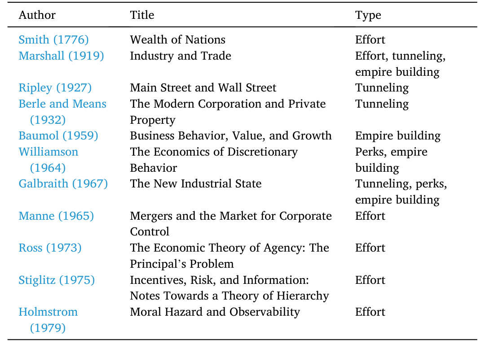
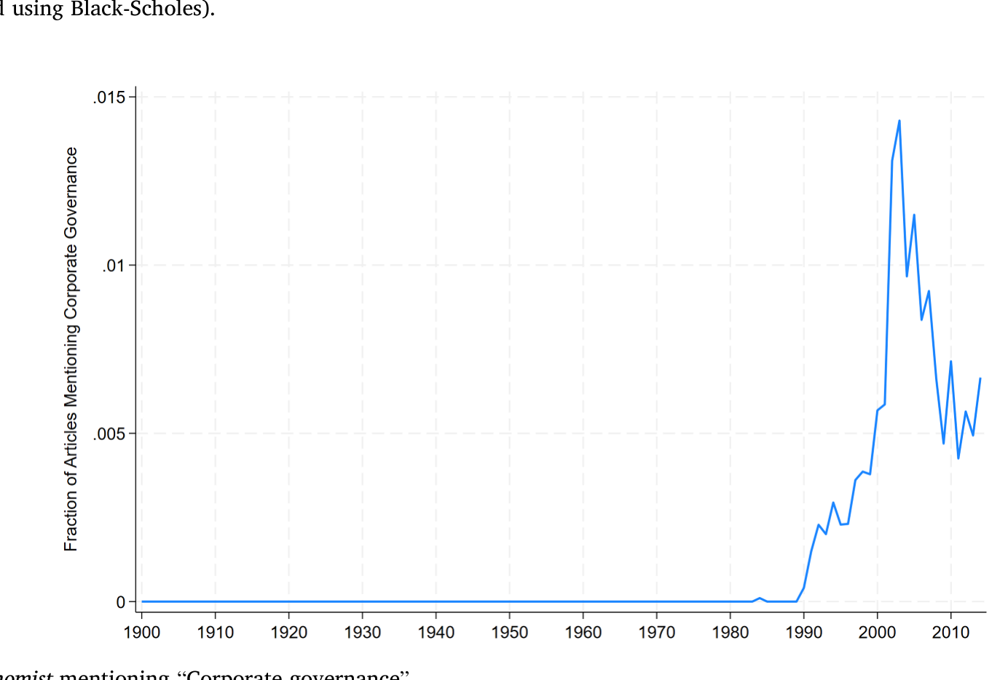
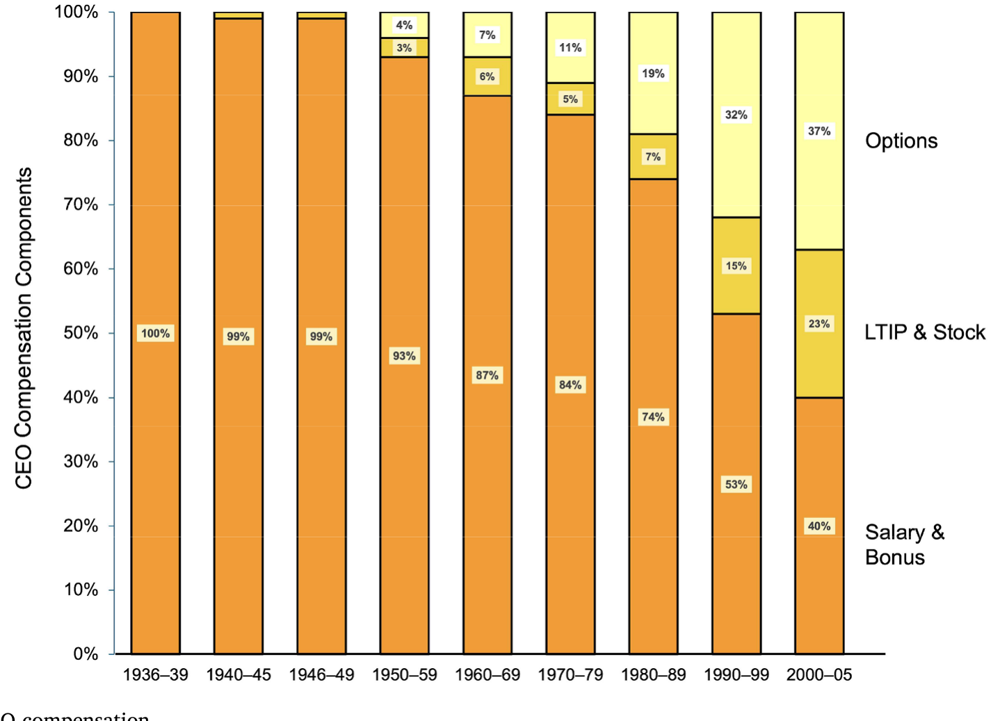
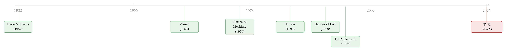

代理问题没有标准答案：一部「公司治理」的发明史
本文读的是 Ma & Shleifer (2025, Journal of Financial Economics)：公司治理这门学问之所以一路演变，关键不在于谁的答案更对，而在于每一代人心里那个「代理问题」长得不一样——你认定经理人坏在哪，就决定了你开出什么药方。Berle-Means 认定是自我交易，于是求助于法律；Jensen-Meckling 认定是在职消费，于是转向市场激励；Jensen (1986) 认定是盲目扩张，于是押注杠杆与并购。一部公司治理史，其实是一部「问题定义」的更替史。
1 一句两百年没散去的牢骚
先讲一个几乎所有金融学生都背过、却很少有人追问到底的开场白。1776 年，亚当·斯密在《国富论》里写下这么一段抱怨：
这些（股份）公司的董事们，既然管的是别人的钱而非自己的钱，就不能指望他们会像私人合伙企业里看守自家财产那样，怀着同样焦虑的警惕去看守它……因此，疏忽与挥霍，必定多多少少地在这类公司的经营中盛行。（p. 700）
这段话被引用了无数次，可它其实塞进了一连串问题：经理人到底坏在哪？是「不够卖力」，还是不止于此？所有权与控制权分离这件事有多普遍？它带来的好处是什么、代价又是什么——代价想必没大到会让资本主义停摆，否则我们今天就看不到它了。最后，是什么机制——公的还是私的——把这份代价压了下去？
这就是后来被称作 公司治理（corporate governance） 的那门学问的起点。Ma 和 Shleifer 这篇文章不做新回归、不报新系数，它做的是一件更野心勃勃的事：把这门学问从斯密到 Jensen 的两百年「发明史」重新讲一遍，并从中提炼出一条贯穿始终的暗线。
那条暗线是什么？我先把谜底放在这里，全文都在反复擦亮它：你怎么定义代理问题，就决定了你会开出什么药方。 问题变了，答案就跟着翻篇。这听起来像句废话，但正是这句「废话」，让法律、激励、杠杆、并购这些看似各说各话的治理工具，第一次有了一条清晰的逻辑线。
2 代理成本，其实有四张面孔
要理解这条线，得先把「代理问题」这个被用滥了的词拆开。文章把早期作者们描述的代理成本归成四类，这一步极其关键——因为后面每一位主角，都只盯着其中一张面孔。
第一张：不够卖力（lack of effort）。 经理人偷懒、敷衍、图安逸，因为他付出的努力，收益大头归了股东。这是斯密的牢骚，也是 Marshall (1919) 的关切，更是后来 Ross (1973)、Stiglitz (1975)、Holmstrom (1979) 那套激励理论的母题。
第二张：在职消费（perquisites）。 漂亮的办公室、有魅力的秘书、给朋友的采购合同、一台「大得超过需要、只是拿来玩」的电脑。Marshall 早就点过：一个独资老板这么花钱无所谓，因为是他自己买单；可经理人这么花，账却记在股东头上。
第三张：盲目扩张（empire building）。 销售最大化、过度投资、为做大而做大、胡乱多元化。Baumol (1959) 把它讲得最透——不过 Baumol 本人并不觉得这是个问题。规模带来权力、影响、荣耀，甚至更高的薪酬（因为薪酬经验上和公司规模挂钩）。
第四张：赤裸的侵占（tunneling / self-dealing）。 直接偷、定向增发、过高薪酬、并购里把小股东挤出去、关联交易里高买低卖。控制人肥了自己，瘦了外部投资者。
这四张面孔，文章用一张表把早期文献的「关注点」一字排开。值得玩味的是同一个 Marshall，被归进了「努力、侵占、扩张」三栏——早期的描述往往含混；而真正把这门学问推进的，恰恰是后来那些敢于只挑一张面孔、把它讲到极致的人。

Table 1: management in management-controlled corporations, profits at the
接着，一个自然的问题是：这四张面孔，难道不能用同一套办法一起对付吗？
不能。这正是全文的枢纽。文章给了一个极漂亮的「算术直觉」：如果代理问题是过度扩张、在职消费、或偷懒，那么激励就管用——因为经理人持股哪怕只有一点点，他从这些浪费里捞到的私人好处本来就不大（多花 1 美元搞没必要的投资，他可能只换到几美分的虚荣），一份不算丰厚的股权或奖金，就足以让他把成本「内部化」。
可如果代理问题是赤裸的侵占呢？把公司 1 美元利润装进自己口袋，私人好处就是整整 1 美元——要靠激励去抵消这种诱惑，激励得强到、贵到离谱。于是文章下了一句斩钉截铁的判断：对自我交易，只有法律拦得住。
记住这个「1 美元 vs 几美分」的对照，下面三位主角的分歧，全是它的推论。
3 第一位主角：Berle-Means 与法律至上
1932 年，Berle 和 Means 出版《现代公司与私有财产》，这被公认为公司治理的第一部严肃科学著作（这份荣誉里还得分一点给 1927 年的 Ripley——「Main Street」和「Wall Street」这对说法就是他发明的）。
他们做了四件事，但真正定调的是两件。
第一件，实证。 他们第一次系统地把美国大公司的股东名单和持股比例拼出来，证明顶层经理人往往只是「微不足道的股东」——除非是创始人或其继承人，否则手里至多百分之一二的股权。「Berle-Means 式公司」从此成了「股权分散、经理人几乎不持股」的代名词。
第二件，定性。 在四张面孔里，Berle 和 Means 一眼锁定了侵占。他们写道：「若我们假定追逐私利是控制权的首要动机，就必须得出结论：控制权的利益不同于、且常常激烈地对立于所有权的利益。（p. 122）」
那么药方呢？顺着上一节的算术，答案几乎是注定的：法律。Berle 本人就是法学教授，全书大半在讨论普通法如何约束侵占。他甚至写下：「我们因此得出结论：在这方面，法律的力量是证券持有人真正拥有的唯一可执行的保障。（p. 197）」这本书后来被看作美国证券法的宣言书——尽管两位作者从头到尾没直接提过证券法。
这套叙事统治了美国学界整整 40 年。直到一场革命把它掀翻。
4 反转：Chicago 革命与 Jensen-Meckling
但真正关键的一步，发生在 1976 年。
二战后的美国经济表现得太好了，大萧条年代那种对市场的悲观显得不合时宜。以 Hayek、Friedman、Coase 为精神领袖的芝加哥经济学革命，正在用「市场与竞争才是效率之源」去置换「国家与法律」的旧信仰。Modigliani-Miller (1958)、Fama (1965) 重塑了金融学。而在公司治理这块，接棒的是 Jensen 和 Meckling。
他们的《Theory of the Firm》干了一件颠覆性的事：把公司治理从法律的语境，整体搬进了市场的语境。股东不再是等着国家来搭救的「无知受害者」；公司被重新理解为 Alchian-Demsetz (1972) 意义上的「一束合约（nexus of contracts）」。
而他们挑的那张面孔，是在职消费。论文里那串著名的清单——办公室的物理陈设、秘书的吸引力、员工纪律的松紧、慈善捐赠的种类与数额、和员工之间的「爱」与「尊重」、一台超大的电脑、向朋友采购……（p. 312）——把 perquisites 写得活灵活现。他们对侵占几乎不感兴趣（大概觉得在他们写作的年代，美国已经靠法律把这个问题解决了），对法律也只在结论里一笔带过。
顺着「1 美元 vs 几美分」的逻辑，药方自然就翻了面：既然问题是在职消费，那么经理人激励、股东监督、产品市场竞争、回到资本市场再融资的压力、债权人的合约治理、信息披露制度，以及——这是 Manne (1965) 埋下的伏笔——控制权市场（market for corporate control），全都管用。Jensen-Meckling 承认代理成本无法根除，但他们端出的是满满一桌私人市场机制。文章用了个绝妙的比喻：就像摩西捧着石板下山，公司治理领域从此领受了它未来几十年的「诫命」。
（这套从激励出发、最终落到资本结构的逻辑，本身就值得单独细读——可参见《债务这副药，为什么不能全吃？——重读 Jensen 和 Meckling 五十年》。）
5 再反转：Jensen 自己改了主意
故事到这里如果停下，就成了「法律 vs 市场」的二元对立。但文章最精彩的地方，是它指出连 Jensen 本人都没停在 1976 年的答案上。
1980 年代，一场并购狂潮重塑了美国公司版图——按 Shleifer 和 Vishny (1991) 的统计，财富 500 强里有 143 家、占 28% 失去了独立地位。狂潮当中，Jensen 的心态从乐观转向了沮丧。他发现现实里的经理人面对收购时拼命抵抗，而既有的治理工具（激励薪酬、董事会）非但没在约束他们，反而在服务他们。
于是 Jensen (1986) 换了第三张面孔：盲目扩张与过度多元化。他和 Murphy (1990) 一起实证地论证：典型 CEO 持股太低，股东财富变动对他个人的影响微乎其微，所以激励薪酬其实「极其微弱」。
可这里藏着一个被后人反复辩论的张力。文章诚实地把反方也摆了出来：Baker 和 Hall (2004) 指出，CEO 持股比例虽小，但他大部分个人财富可能都押在这家公司的股票上。文章举了个干净的例子：一家市值 10 亿美元的公司，CEO 持股 5%、即 5000 万美元；若他全部身家都在这些股票里，那么一笔会血本无归的 1 亿美元投资，会让他损失自己财富的 10%——除非帝国梦或在职消费值超过 500 万美元，否则他不会去投。Elsila 等人 (2013) 对瑞典公司的数据发现，CEO 平均有 45% 的财富押在自家股票上。换句话说，激励到底强不强，取决于你看的是「持股比例」还是「财富集中度」——这个争论至今没有定论。
不管怎样，Jensen (1986) 给出的药方，又一次随着「问题」的改变而翻面：既然问题是有现金、却没有好项目的公司在乱投资，那就得逼它们把自由现金流吐出来。除了股利（Easterbrook, 1984），他给债务赋予了一个全新的治理角色——还不上钱就破产，于是杠杆成了逼经理人吐出现金的鞭子。沿着这条逻辑，杠杆收购（LBO）的兴起、乃至 Jensen (1989) 那篇《Eclipse of the Public Corporation》宣告「公众公司这种组织形式已经过时」，都顺理成章。到 Jensen (1993) 给美国金融学会做主席演讲时，他干脆把这场并购浪潮称为美国的「第三次工业革命」。
（关于自由现金流这一步的来龙去脉，另见《现金为什么一定要「还」出去？——四十年后，重读 Jensen 的自由现金流》。）
至此，全文那条暗线已经被擦得锃亮：
- Berle-Means：问题是侵占 → 药方是法律；
- Jensen-Meckling：问题是在职消费 → 药方是激励与市场；
- Jensen (1986)：问题是盲目扩张 → 药方是杠杆与并购。
三套答案没有谁推翻谁，它们各自都对——对于各自定义的那个问题而言。
6 革命之后：观念如何变成常识
文章最后做了一件克制而有趣的事。作者明确承认「确立因果关系是不可能的」，但还是想给读者看一眼：这场 Jensen-Meckling 革命，给世界留下了什么痕迹。
一个痕迹是话语。「公司治理」从一个学术黑话，变成了商业媒体的高频词。作者数了《经济学人》里提及这个词的文章数量，那条曲线几乎是从无到有地爬起来的。

Figure 2: Articles in The Economist mentioning
另一个痕迹是高管薪酬结构。1970 年代那些「激进」的主张——给经理人高弹性的、与股价挂钩的激励——几十年后变成了学界与业界共同的常识。CEO 薪酬里期权和股权的占比一路抬升，正是这场革命落到地面上的样子。

Figure 1: The structure of CEO compensation
这也是文章想留给我们的最后一层意味：今天被当作天经地义的「常识」，往往是某一代人针对某一个特定问题，给出的某一个特定答案。 当问题再次改变——比如当大股东、机构投资者、ESG 重新成为治理的焦点——我们或许又会需要一套新的药方。
7 文献脉络
把这条线索铺在时间轴上，会看得更清楚。它的起点是 Smith (1776) 那句关于「别人的钱」的牢骚；中间经由 Marshall (1919)、Ripley (1927) 把四张面孔逐渐描出轮廓；Berle & Means (1932) 第一次把它做成科学，并把砝码压在法律一侧。
转折由芝加哥革命点燃：Manne (1965) 提出控制权市场，为「市场治理」埋下种子；Jensen & Meckling (1976) 把整门学问搬进市场语境，Fama (1980)、Fama & Jensen (1983) 沿着它扩展；Jensen (1986) 自我修正、转向自由现金流；Jensen (1993) 把并购抬升为「第三次工业革命」。
而这条线并未在 Jensen 处终结。La Porta, Lopez-de-Silanes, Shleifer & Vishny (1997, 1998) 的「法与金融」研究，某种意义上把 Berle-Means 对法律的强调，在全球横截面上重新激活——只不过这一次，关注的对象从分散持股的美国公司，变成了集中持股、控制人侵占小股东的世界其他角落。本文正站在这整条脉络的回望点上，替我们做了一次结账。

8 评论与延伸（Q&A + 研究方向）
(a) 几个可能的疑问
Q：这篇文章既没有数据也没有模型，凭什么发在 JFE 上？
它的贡献是「组织性」而非「发现性」的。它提出并论证了一条此前散落各处、却从未被清晰点明的命题——治理药方内生于对代理问题的定义——并用 Berle-Means、Jensen-Meckling、Jensen (1986) 三个案例把它讲透。把一团乱麻理出一根主线，本身就是学术贡献，尤其出自亲历这段历史的 Shleifer 之手。
Q：「问题决定药方」这个论点，会不会只是事后诸葛亮的漂亮叙事？
这是最该警惕的地方。三位主角恰好各挑一张面孔、各配一种药方，读起来太「整齐」了，难免有为了叙事而裁剪历史的嫌疑。文章自己也承认在谈「后果」时无法建立因果。所以更稳妥的读法是：把它当作一个有解释力的组织框架，而非一条经过检验的因果命题。
Q：Berle-Means 选「法律」、Jensen-Meckling 选「市场」，真的只是因为问题不同，还是因为时代意识形态不同？
两者都有，而且文章并不回避。它明确把 Jensen-Meckling 放进「芝加哥革命」的大背景里——那场革命本身带着对国家干预的「情绪性敌意」。所以「问题决定药方」是逻辑层面的解释，而「时代决定你盯上哪个问题」则是更深一层的社会学解释。两层叠在一起，才是完整的故事。
Q：「激励对侵占无效、只有法律管得住」这个论断，今天还成立吗？
核心算术依然成立：侵占的私人收益是 1:1，激励要抵消它代价极高。但现实里，法律之外还多了声誉、机构投资者监督、做空者、媒体等市场化约束。所以更准确的说法是：对侵占，纯激励确实无力，但「法律」如今该被理解成更广义的一整套外部约束。
Q：激励到底强不强，「持股比例」和「财富集中度」哪个对？
文章没有给最终裁决，而是把两边都摆上桌。Jensen-Murphy (1990) 看持股比例，结论是激励微弱；Baker-Hall (2004)、Elsila et al. (2013) 看财富集中度（瑞典 CEO 45% 身家在自家股票里），结论是激励其实不弱。答案取决于经理人的财富组合，而这正是数据最稀缺、最难观测的地方。
Q：这套「美国故事」对股权集中、家族控制的市场（如多数新兴市场）有多大参照价值？
参照价值可能恰恰在于它的「错位」。美国 20 世纪的主线是分散持股下的经理人代理问题，于是 Jensen-Meckling 那套市场药方才合用；而在控制人集中的市场，主要矛盾回到了 Berle-Means 式的侵占——这也正是 La Porta 等人「法与金融」议程的出发点。换句话说，换个市场，可能就得换回另一张面孔、另一副药方。
(b) 几个可能的研究问题与提案
1. 债权人治理 vs 经理人侵占：信用市场里的「Berle-Means 时刻」
【经济故事】Jensen (1986) 把债务当作逼经理人吐现金的工具，但债务同时会催生「资产替代」式的侵占——经理人/股东把风险甩给债权人。把「问题决定药方」搬到信用市场：当主要矛盾从在职消费转为对债权人的侵占时，契约条款（covenant）、抵押、控制权转移如何随之变化？
【可行性】高。所需数据成熟：贷款合约用 DealScan，债券契约用 Mergent FISD，违约/控制权转移可手工编码。识别上可用契约违反（covenant violation）作为债权人控制权转移的断点（沿用 Nini, Smith & Sufi 2012 的设计），观察治理工具的切换。
2. 外资持有人会带来「哪一张面孔」的治理？
【经济故事】外国机构投资者进入一个市场时，他们更担心哪类代理成本——是侵占，还是低效扩张？按本文逻辑，这会决定他们偏好的治理渠道（用脚投票、推动法律保护、还是施压管理层激励）。外资占比的变化，可能正对应着「主导问题定义」的变化。
【可行性】中。持股数据用 FactSet/Refinitiv 的国别机构持仓；识别可借指数纳入（如 MSCI 纳入）带来的外资被动流入作为外生冲击。难点在于把「治理渠道」量化（投票、提案、薪酬结构变动）并区分机制。
3. 「公司治理」话语的兴起，是否真的改变了公司行为？
【经济故事】文章用《经济学人》词频展示了观念的扩散，却坦承无法建立因果。一个自然的延伸：媒体/学界对「治理」关注度的外生上升，是否真的压低了在位经理人的代理成本（如减少了价值毁灭型并购）？
【可行性】中。文本数据可大规模抓取（报刊、财报 MD&A、电话会）；难点全在识别——需要找到关注度的外生变动（如某次治理丑闻的曝光冲击），用事件研究或 DiD 比较暴露程度不同的公司。诚实地说，干净的外生性很难找，这也是本文自己选择不碰因果的原因。
参考文献
- Berle, A. A., & Means, G. C. (1932). The Modern Corporation and Private Property. Macmillan, New York.
- Jensen, M. C., & Meckling, W. H. (1976). Theory of the firm: managerial behavior, agency costs and ownership structure. Journal of Financial Economics 3(4), 305–360.
- Jensen, M. C. (1986). Agency costs of free cash flow, corporate finance, and takeovers. American Economic Review 76(2), 323–329.
- Jensen, M. C., & Murphy, K. J. (1990). Performance pay and top-management incentives. Journal of Political Economy 98(2), 225–264.
- Fama, E. F. (1980). Agency problems and the theory of the firm. Journal of Political Economy 88(2), 288–307.
- Fama, E. F., & Jensen, M. C. (1983). Separation of ownership and control. Journal of Law and Economics 26(2), 301–325.
- Manne, H. G. (1965). Mergers and the market for corporate control. Journal of Political Economy 73(2), 110–120.
- Baumol, W. J. (1959). Business Behavior, Value and Growth. Macmillan, New York.
- Baker, G. P., & Hall, B. J. (2004). CEO incentives and firm size. Journal of Labor Economics 22(4), 767–798.
- Shleifer, A., & Vishny, R. W. (1991). Takeovers in the '60s and the '80s: evidence and implications. Strategic Management Journal 12, 51–59.
- Easterbrook, F. H. (1984). Two agency-cost explanations of dividends. American Economic Review 74(4), 650–659.
- La Porta, R., Lopez-de-Silanes, F., Shleifer, A., & Vishny, R. W. (1997). Legal determinants of external finance. Journal of Finance 52(3), 1131–1150.
- La Porta, R., Lopez-de-Silanes, F., Shleifer, A., & Vishny, R. W. (1998). Law and finance. Journal of Political Economy 106(6), 1113–1155.
- Ma, Y., & Shleifer, A. (2025). The invention of corporate governance. Journal of Financial Economics 172, 104115.